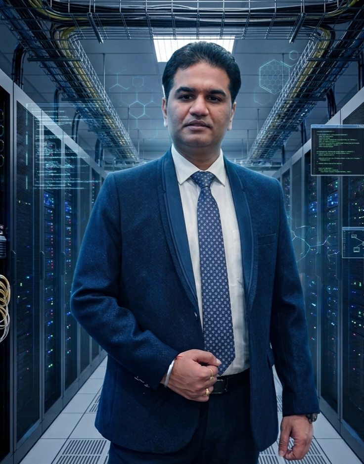

IT Operations & Compliance Leader — Ghaziabad, India
Hi, I'm Gaurav Luthra.
I keep enterprise cloud & compliance running.
20+ years leading IT governance, audit programs, and 24x7 cloud operations for banking and enterprise clients — currently steering a 45-member team through ISO 27001, SOC, and CMMI Level 5 maturity at Cyfuture India.

GauravPic.jpeg
01 About
I'm a senior IT leader with more than two decades in governance, compliance, service delivery, and enterprise cloud and infrastructure operations across banking and enterprise environments. At Cyfuture India, I lead IT & Compliance for a 45-member, 24x7 global operations team — owning ISO 27001:2022, ISO 9001:2015, SOC, and CMMI audit programs alongside VMware Cloud Director-based public cloud service delivery.
Before that, I spent a decade at HCL Technologies leading enterprise VMware and infrastructure operations for US and UK enterprise accounts. I'm PMP-certified, and what I bring to the table is a combination of governance and risk leadership with real technical depth in cloud and virtualization — not one at the expense of the other.
- LocationGhaziabad, Uttar Pradesh, India
- FocusIT Governance, Cloud Ops & Compliance
- CurrentlySr. Manager – IT & Compliance, Cyfuture India
- StudiedMBA (IT) & BCA, Sikkim Manipal University
02 Career Journey
A running log of the roles and milestones that got me here.
-
Sr. Manager – IT & Compliance @ Cyfuture India
Own end-to-end audit leadership for ISO 27001:2022, ISO 9001:2015, SOC, and CMMI, having reached Level 3 and now driving toward Level 5. Run a 45-member, 24x7 team across VMware Cloud Director-based multi-tenant cloud operations, SLA/KPI governance, and DC-DR drills, while engaging VPs, CTOs, and CISOs directly on escalations and change approvals.
-
Consultant, Infrastructure & Cloud Operations @ HCL Technologies
Ten years as Wintel & VMware Lead / L3 Infrastructure Administrator for major US and UK enterprise accounts. Served as the L3 escalation point for VMware vSphere infrastructure, led major incident bridges, drove root-cause analysis on recurring issues, and automated administration via PowerShell/PowerCLI while managing WSUS patching across 2,000+ servers.
-
Assistant Manager – IT @ Astrowix India Projects
Led IT operations and infrastructure support for an e-commerce and web solutions company, managing servers, network infrastructure, and the helpdesk team.
-
System Administrator @ Mano Info Systems
Maintained Windows server infrastructure, Active Directory, and network services for an IT services and software development firm, including client site support.
-
System Administrator @ WLC College (I) Ltd.
Managed campus-wide IT infrastructure — servers, networking, LAN administration, and computer labs — for a fashion and design education institution.
-
Network Engineer @ Tacker Technologies
Designed, configured, and maintained LAN/WAN networks and Windows server environments for an IT infrastructure and networking services company — where it all started.
03 Areas of Expertise
Governance & Compliance
Cloud & Virtualization
Service & Operations
04 Credentials
Certifications
- PMP® — PMI, 2026 (No. 4395020)
- HCL Certified SRE Professional
- Microsoft Azure Administrator (AZ-103)
- VMware Certified Professional 8.x – DCV
- MCSE – Windows Server 2012
Education
- MBA – Information Technology, Sikkim Manipal University
- BCA – Computer Applications, Sikkim Manipal University
Recognition
- Star Performer Award (multiple) – HCL Technologies
- Top Team Performance Ratings – HCL Technologies
- Client Appreciation Awards – UK & US enterprise clients
05 Contact
Open to conversations on IT governance, cloud operations, and compliance leadership roles.